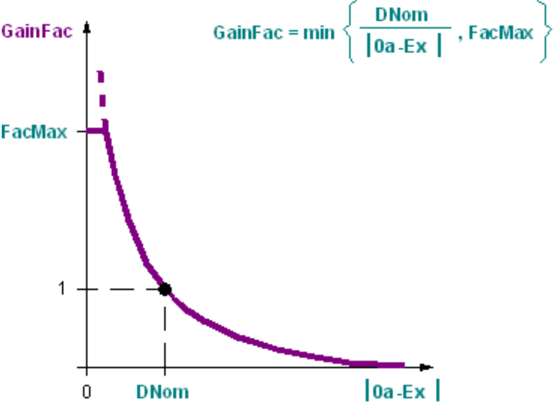

[ADAGAIN] 控制器增益的调整
功能块 ADAGAIN 根据外部空气和抽取空气之间的差异计算能量回收序列的增益系数。它可用于温度或湿度控制。
ADAGAIN 根据外部空气和抽取空气之间的差异计算能量回收序列的增益系数。该计算适用于温度和湿度。
Functioning
ADAGAIN 计算当前外部空气之间的差异[Oa] 并抽取空气[Ex] 并确定增益因子 [GainFac] 通过以下函数：

Example
如果差异小于设计差异[DNom]，增益因子[GainFac]大于1.0。增益因子可以是最大。等于定义的极限值[FacMax]。差异越大，增益因子越小。
Application
能量回收系统的效率很大程度上取决于温度或湿度的差异。室外空气与排风之间的差异越大，能量回收系统的定位效率就越高。
ADAGAIN 与负责能量回收控制的功能块 PID_CTR 一起使用。能量回收调试期间，增益系数[GainFacERC序列的]是根据现有条件设置的，以便控制稳定。
在设计控制参数时，外部空气和抽气之间的主要差异被输入为设计差异[DNom]。如果室外空气和抽气之间的比例发生变化，则会补偿增益系数以确保稳定的能量回收控制。输出[GainFac] 与由 ERC 控制的功能块 PID_CTR 上的同名输入互连。
您可以使用此块来控制温度或湿度。